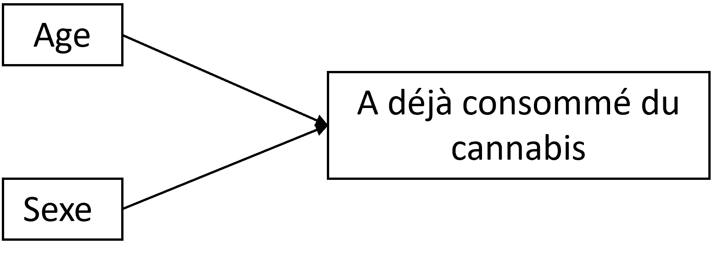
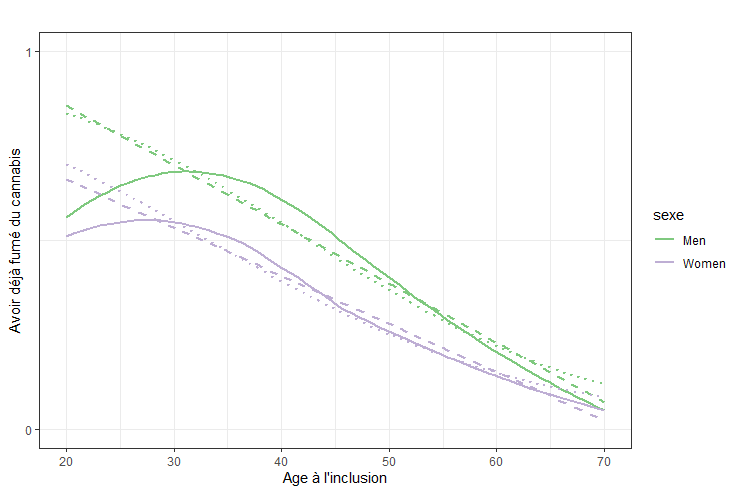
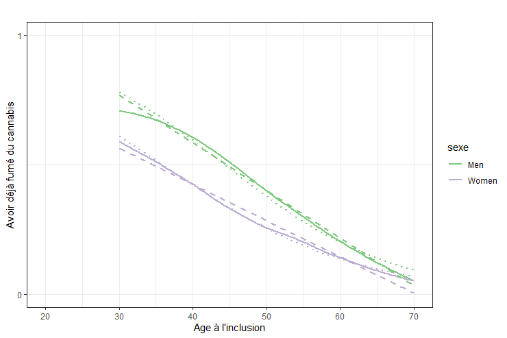

Chapitre 16 Exemple 4 - X quantitatif
Les articles qui se consacrent aux interactions présentent souvent des méthodes applicables lorsque les deux expositions X et V sont binaires. Or, en épidémiologie, les expositions peuvent aussi être continues et, si dichotomiser ces variables peut simplifier l’approche de l’interaction, cela conduit à une perte d’information qui n’est pas souhaitable et pose la question complexe du choix des seuils [11] [12] [13].
Nous présentons ici un exemple ou l’une des expositions, l’âge, est analysée en tant que variable quantitative continue.
16.1 Formuler les objectifs
Dans cette étude fictive, on s’est intéressé à la consommation de cannabis : comment le fait d’avoir déjà fumé du cannabis Y varie avec l’âge A et le sexe S.
La démarche est explicative : on cherche à comprendre les mécanismes causaux de ce comportement de santé.
Ici, on adoptera une démarche d’analyse d’interaction \(\small do(S,A)\)
16.2 Stratégies et méthodes
Le DAG (sans les médiateurs) était :

Les estimands était définis par :
- L’effet de l’âge (“avoir 10 ans de plus”) chez les hommes
- \(\small DR = Y_{S=0,A=a+10} - Y_{S=0,A=a}\)
- \(\small RR = \frac{Y_{S=0,A=a+10}}{Y_{S=0,A=a}}\)
- L’effet de l’âge (“avoir 10 ans de plus”) chez les femmes :
- \(\small DR = Y_{S=1,A=a+10} - Y_{S=1,A=a}\)
- \(\small RR = \frac{Y_{S=1,A=a+10}}{Y_{S=1,A=a}}\)
- L’effet d’interaction entre l’âge et le sexe (l’effet du sexe est-il différent en fonction de l’âge et l’effet de l’âge est-il différent en fonction du sexe ?)
- sur l’échelle additive : \(\small AI = Y_{S=1,A=a+10} - Y_{S=0,A=a+10} - Y_{S=1,A=a} + Y_{S=0,A=a+10}\)
- sur l’échelle multiplicative : \(\small MI =\frac{Y_{S=1,A=a+10} \times Y_{S=0,A=a}}{Y_{S=1,A=a} \times Y_{S=0,A=a+10}}\)
16.3 Analyse descriptive
Dans cette population (N=202 768), il y avait 53,7% d’hommes et la moyenne d’âge était de 47,1 ans.
On peut commencer par décrire la proportion de personnes ayant déjà fumé du cannabis par sexe et classe d’âge :
| Sexe | Age | P(Cannabis), % |
|---|---|---|
| Male | 20- | 51,1 |
| Male | ]20 à 40] | 66,3 |
| Male | ]40 à 60] | 40,4 |
| Male | 60+ | 12,1 |
| Female | 20- | 44,2 |
| Female | ]20 à 40] | 52,7 |
| Female | ]40 à 60] | 26,7 |
| Female | 60+ | 12,1 |
Il semble y avoir une interaction entre l’âge et le sexe sur la probabilité d’avoir déjà fumé du cannabis. Cependant, la relation entre l’âge et l’outcome ne semble pas linéaire, ce qui est confirmé graphiquement :

Pour simplifier les analyses, nous n’allons inclure que les plus de 30 ans (N = 177 940), pour lesquels la relation est linéaire :

Le modèle de régression logistique (\(\cdot\cdot\cdot\)) semble être plus proche de la modélisation non paramétrique sur données observées (loess, —–) que la modélisation linaire (\(---\)) . D’ailleurs, le R² du modèle logistique est de 0,168 contre 0,139 pour le modèle linéaire.
16.4 Analyse exploratoire
16.4.1 Régression logistique
L’outcome étant binaire, il est plus classique d’utiliser un modèle logistique, dont les résultats seraient :
# Call:
# glm(formula = cannabis ~ sexe + age + sexe * age, family = binomial,
# data = data)
#
# Coefficients:
# Estimate Std. Error z value Pr(>|z|)
# (Intercept) 3.9144609 0.0372560 105.07 <2e-16 ***
# sexeWomen -1.1644706 0.0511834 -22.75 <2e-16 ***
# age -0.0882928 0.0007566 -116.70 <2e-16 ***
# sexeWomen:age 0.0117238 0.0010623 11.04 <2e-16 ***
# ---
# Signif. codes: 0 ‘***’ 0.001 ‘**’ 0.01 ‘*’ 0.05 ‘.’ 0.1 ‘ ’ 1Ce qui, en terme d’OR, donnerait :
# OR 2.5 % 97.5 %
# (Intercept) 50.1220409 46.5985990 53.9259952
# sexeWomen 0.3120878 0.2822910 0.3450107
# age 0.9154927 0.9141333 0.9168485
# sexeWomen:age 1.0117927 1.0096884 1.0139018Les modèles de régression logistique donnent des résulats sur l’échelle multiplicative :
- L’effet du sexe (d’être femme plutot que homme) est :
- “A 0 ans” (à l’origine) : \(\small OR(S|A=0) = \times 0.31\)
- “A 1 ans” : \(\small OR(S|A=1) = exp(-1,164 + 0,012) \times\) 0.3
- A 40 ans (par exemple) : \(\small OR(S|A=40) = exp(-1,164 + 0,012 \times 40) = \times\) 0.5
- L’effet de l’age est :
- Quand on est un homme : \(\small OR(A|S=0) = \times 0,92\) par année d’âge
- Quand on est une femme : \(\small OR(A|S=1) = exp(-0,088 + 0,012) = \times\) 0.9 par année d’âge
- L’effet d’être une femme et d’avoir 1 an de plus
- plutot que homme “et 0 ans”
- \(\small OR(A,S) = exp(-1,164 -0,088 + 0,012) = \times\) 0.3
- L’effet d’interaction/modification d’effet est : \(\small MI =\times 1,01\)
- Un effet d’interaction additif \(\small RERI_{OR} = OR_{11} - OR_{01} - OR_{10} + 1 =\) 0.047
On a donc une interaction multiplicative positive (MI>1) et significative et une interaction additive aussi positive (RERI >0).
16.4.2 Régression linéaire
La sortie d’une modèle linéaire simple serait :
#
# Call:
# lm(formula = cannabis ~ sexe + age + sexe * age, data = data)
#
# Coefficients:
# Estimate Std. Error t value Pr(>|t|)
# (Intercept) 1.3197103 0.0066820 197.50 <2e-16 ***
# sexeWomen -0.3373482 0.0091573 -36.84 <2e-16 ***
# age -0.0183730 0.0001294 -142.03 <2e-16 ***
# sexeWomen:age 0.0044248 0.0001781 24.85 <2e-16 ***
# Signif. codes: 0 ‘***’ 0.001 ‘**’ 0.01 ‘*’ 0.05 ‘.’ 0.1 ‘ ’ 1On peut en déduire, ici sur une échelle additive, que :
- L’effet du sexe (d’être femme plutot que homme) est :
- “A 0 ans” (à l’origine) : \(\small DR(S|A=0) = -33,73\)%
- A 20 ans (par exemple) : \(\small DR(S|A=20) = -33,73 + 0,44 \times 20 =\) -24.93%
- A 40 ans (par exemple) : \(\small DR(S|A=40) = -33,73 + 0,44 \times 40 =\) -16.13%
- A 60 ans (par exemple) : \(\small DR(S|A=60) = -33,73 + 0,44 \times 60 =\) -7.33%
- L’effet de l’age est :
- Quand on est un homme : \(\small DR(A|S=0) = -1,84\) % par année d’âge
- Quand on est une femme : \(\small DR(A|S=1) = -1,84 + 0.44 =\) -1.4 % par année d’âge
- L’effet d’être une femme et d’avoir 1 an de plus
- plutot que homme et un certain âge
- \(\small DR(A,S) = -33,73 -1,84 + 0,44 =\) -35.13 %
- L’effet d’interaction/modification d’effet est : \(\small AI = +0.44\) %
On retrouve une interaction additive significative et positive. Les expositions ayant un effet négatif et l’effet d’interaction étant positif, cet effet est difficile à interpréter, mais on pourrait le formuler plus simplement en changeant la catégorie de référence du sexe de homme à femme.
Ainsi : globalement, la probabilité d’avoir déjà fumer du cannabis diminue avec l’âge chez les hommes (-1,8% par an) et chez les femmes (-1,4% par an). Cette probabilité est plus élevée chez les hommes (de 16% par exemple à 40 ans), mais cet écart diminue avec l’âge, de 0,44% par année d’âge.
16.4.3 Effets marginaux
A partir des modèles, on peut déduire les effets marginaux pour certaines catégories. Par exemple, avec le modèle logistique :
- \(\small Y_{S=0,A=30} = \frac{exp(3,914 - 0,088 \times 30)}{1+exp(3,914 - 0,088 \times 30)} =\) 78.1%
- \(\small Y_{S=0,A=50} = \frac{exp(3,914 - 0,088 \times 50)}{1+exp(3,914 - 0,088 \times 50)} =\) 38.1%
- \(\small Y_{S=1,A=30} = \frac{exp(3,914 - 1,164 - 0,088 \times 30 + 0,012 \times 30)}{1+exp(3,914 - 1,164 - 0,088 \times 30 + 0,012 \times 30)} =\) 61.5%
- \(\small Y_{S=1,A=50} = \frac{exp(3,914 - 1,164 - 0,088 \times 50 + 0,012 \times 50)}{1+exp(3,914 - 1,164 - 0,088 \times 50 + 0,012 \times 50)} =\) 25.9%
Avec le modèle linéaire, on aurait :
- \(\small Y_{S=0,A=30} = 131,97 - 1,84 \times 30 =\) 76.8%
- \(\small Y_{S=0,A=50} = 131,97 - 1,84 \times 50 =\) 40%
- \(\small Y_{S=1,A=30} = 131,97 -33,73 - 1,84 \times 30 + 0,44 \times 30 =\) 56.2%
- \(\small Y_{S=1,A=50} = 131,97 -33,73 - 1,84 \times 50 + 0,44 \times 50 =\) 28.2%